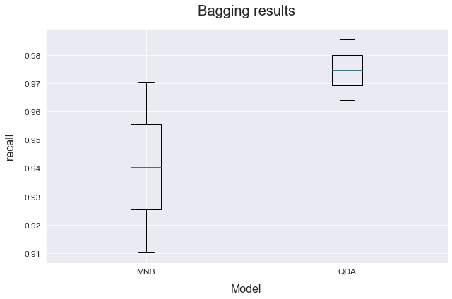

Multi-metric runs
This example shows how we can evaluate an ATOM pipeline on multiple metrics.
Import the breast cancer dataset from sklearn.datasets. This is a small and easy to train dataset whose goal is to predict whether a patient has breast cancer or not.
Load the data
# Import packages
from sklearn.datasets import load_breast_cancer
from atom import ATOMClassifier
# Get the dataset's features and targets
X, y = load_breast_cancer(return_X_y=True)
Run the pipeline
# Call ATOM and run the pipeline using multipe metrics
# Note that for every step of the BO, both metrics are calculated, but only the first is used for optimization!
atom = ATOMClassifier(X, y, n_jobs=2, verbose=2, warnings=False, random_state=1)
atom.run(['MNB', 'QDA'], metric=('f1', 'recall'), n_calls=3, n_random_starts=1, bagging=4)
<< ================== ATOM ================== >>
Algorithm task: binary classification.
Parallel processing with 2 cores.
Applying data cleaning...
Dataset stats ================= >>
Shape: (569, 31)
Scaled: False
----------------------------------
Size of training set: 456
Size of test set: 113
----------------------------------
Class balance: 0:1 <==> 0.6:1.0
Instances in target per class:
| | total | train_set | test_set |
|---:|---------:|-------------:|------------:|
| 0 | 212 | 167 | 45 |
| 1 | 357 | 289 | 68 |
Running pipeline ============================= >>
Models in pipeline: MNB, QDA
Metric: f1, recall
Running BO for Multinomial Naive Bayes...
Random start 1 ----------------------------------
Parameters --> {'alpha': 1, 'fit_prior': True}
Evaluation --> f1: 0.9260 Best f1: 0.9260 recall: 0.9722 Best recall: 0.9722
Time iteration: 2.823s Total time: 2.826s
Iteration 2 -------------------------------------
Parameters --> {'alpha': 9.744, 'fit_prior': False}
Evaluation --> f1: 0.9208 Best f1: 0.9260 recall: 0.9654 Best recall: 0.9722
Time iteration: 0.043s Total time: 2.872s
Iteration 3 -------------------------------------
Parameters --> {'alpha': 0.99, 'fit_prior': True}
Evaluation --> f1: 0.9244 Best f1: 0.9260 recall: 0.9724 Best recall: 0.9724
Time iteration: 0.032s Total time: 3.030s
Results for Multinomial Naive Bayes:
Bayesian Optimization ---------------------------
Best parameters --> {'alpha': 1, 'fit_prior': True}
Best evaluation --> f1: 0.9260 recall: 0.9722
Time elapsed: 3.201s
Fitting -----------------------------------------
Score on the train set --> f1: 0.9243 recall: 0.9723
Score on the test set --> f1: 0.9103 recall: 0.9706
Time elapsed: 0.014s
Bagging -----------------------------------------
Score --> f1: 0.9100 ± 0.0005 recall: 0.9669 ± 0.0064
Time elapsed: 0.034s
-------------------------------------------------
Total time: 3.253s
Running BO for Quadratic Discriminant Analysis...
Random start 1 ----------------------------------
Parameters --> {'reg_param': 0}
Evaluation --> f1: 0.9654 Best f1: 0.9654 recall: 0.9619 Best recall: 0.9619
Time iteration: 0.054s Total time: 0.056s
Iteration 2 -------------------------------------
Parameters --> {'reg_param': 1.0}
Evaluation --> f1: 0.9245 Best f1: 0.9654 recall: 0.9897 Best recall: 0.9897
Time iteration: 0.054s Total time: 0.114s
Iteration 3 -------------------------------------
Parameters --> {'reg_param': 0.1}
Evaluation --> f1: 0.9626 Best f1: 0.9654 recall: 0.9793 Best recall: 0.9897
Time iteration: 0.057s Total time: 0.252s
Results for Quadratic Discriminant Analysis:
Bayesian Optimization ---------------------------
Best parameters --> {'reg_param': 0}
Best evaluation --> f1: 0.9654 recall: 0.9619
Time elapsed: 0.435s
Fitting -----------------------------------------
Score on the train set --> f1: 0.9828 recall: 0.9896
Score on the test set --> f1: 0.9710 recall: 0.9853
Time elapsed: 0.018s
Bagging -----------------------------------------
Score --> f1: 0.9606 ± 0.0081 recall: 0.9853 ± 0.0104
Time elapsed: 0.036s
-------------------------------------------------
Total time: 0.494s
Final results ========================= >>
Duration: 3.750s
------------------------------------------
Multinomial Naive Bayes --> f1: 0.910 ± 0.001 recall: 0.967 ± 0.006
Quadratic Discriminant Analysis --> f1: 0.961 ± 0.008 recall: 0.985 ± 0.010 !
Analyze the results
# Note that some columns in the results dataframe now contain a list of scores,
# one for each metric_, in the same order as you called them
atom.results[['metric_bo', 'metric_train', 'metric_test']]
| score_bo | score_train | score_test | |
|---|---|---|---|
| model | |||
| MNB | [0.9259597646215939, 0.9722323049001815] | [0.924342105263158, 0.972318339100346] | [0.9103448275862068, 0.9705882352941176] |
| QDA | [0.965402611638704, 0.9618874773139746] | [0.9828178694158075, 0.9896193771626297] | [0.9710144927536232, 0.9852941176470589] |
# Some plots allow us to choose the metric_ we want to show
atom.plot_bagging(metric='recall')
